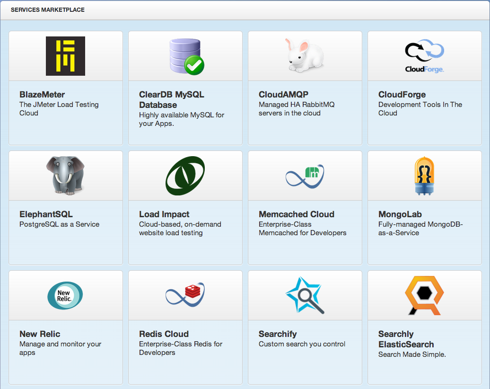
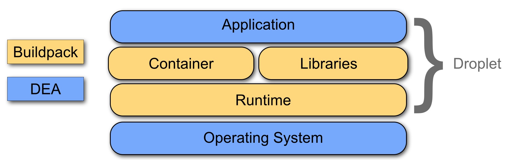
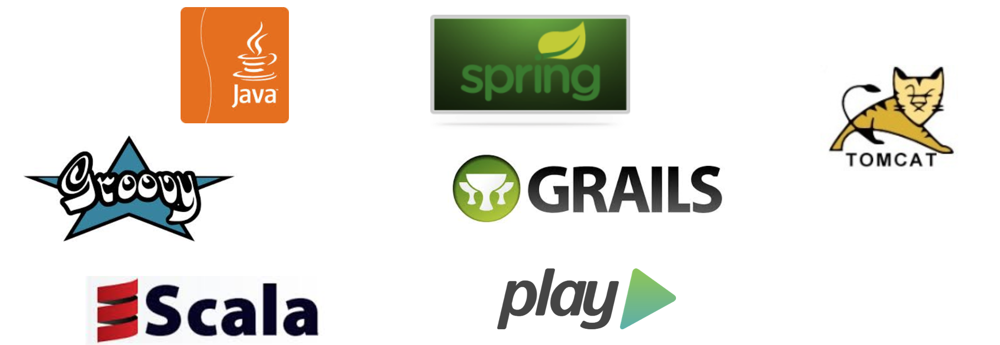
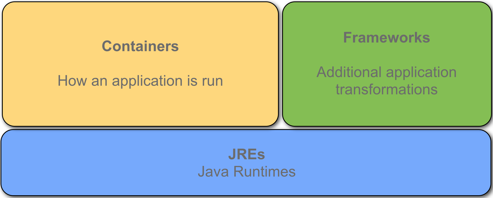
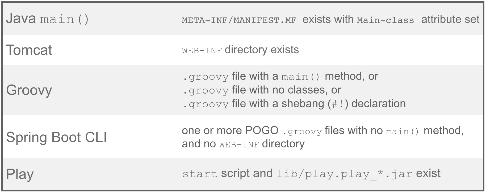
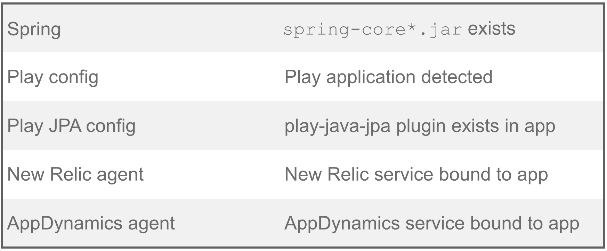

<!doctype html>
<html lang="en">

	<head>
		<meta charset="utf-8">

		<title>Running Java applications on Cloud Foundry</title>

		<meta name="author" content="Scott Frederick">

		<meta name="apple-mobile-web-app-capable" content="yes" />
		<meta name="apple-mobile-web-app-status-bar-style" content="black-translucent" />

		<meta name="viewport" content="width=device-width, initial-scale=1.0, maximum-scale=1.0, user-scalable=no">

		<link rel="stylesheet" href="css/reveal.min.css">
		<link rel="stylesheet" href="css/theme/beige.css" id="theme">

		<!-- For syntax highlighting -->
		<link rel="stylesheet" href="lib/css/zenburn.css">

		<!-- If the query includes 'print-pdf', use the PDF print sheet -->
		<script>
			document.write( '<link rel="stylesheet" href="css/print/' + ( window.location.search.match( /print-pdf/gi ) ? 'pdf' : 'paper' ) + '.css" type="text/css" media="print">' );
		</script>

		<!--[if lt IE 9]>
		<script src="lib/js/html5shiv.js"></script>
		<![endif]-->
	</head>

	<body>

		<div class="reveal">

			<div class="slides">
				<section data-markdown><script type="text/template">
          ## Running Java Applications 
          ## on Cloud Foundry

          
        </script></section>

				<section data-markdown><script type="text/template">
          ### Scott Frederick

          Community Engineer <small>on</small> Cloud Foundry <small>at</small> Pivotal
            
          @scottyfred
          
          http://www.linkedin.com/in/scottfrederick
          
          https://github.com/scottfrederick

        </script></section>

				<section data-markdown><script type="text/template">
        ### Cloud Foundry 
        #### open Platform-as-a-Service

        

        * sponsored by Pivotal

        * enjoys a vibrant community and ecosystem
          * http://cloudfoundry.org/about

        * deployable to VMware vSphere, OpenStack, and AWS
          * additional infrastructure options in the works, including Google Compute Engine and Microsoft Azure 

        </script></section>

				<section data-markdown><script type="text/template">
        ## Pivotal CF Hosted

        * run.pivotal.io
        * deployment of Cloud Foundry on AWS
        * includes the Services Marketplace

        
        </script></section>

				<section data-markdown><script type="text/template">
        ## Pivotal CF

        * commercial enterprise distribution of Cloud Foundry
        * deployable to VMware vSphere
          * other infrastructure options in the future
        * simple wizard-based configuration and installation
        * supports Pivotal One services
          * Pivotal HD
          * Pivotal Analytics
          * Pivotal RabbitMQ
          * MySQL

        
        </script></section>

				<section data-markdown><script type="text/template">
        ### Let's push an app
        </script></section>

				<section data-markdown><script type="text/template">
        ### What happened? 

        * an isolated container was created in a virtual machine
        * the app was uploaded to the container
        * a JRE was downloaded and installed
        * Tomcat was downloaded, installed, and configured
        * a MySQL database was created and exposed to the app
        </script></section>

				<section data-markdown><script type="text/template">
        ### Buildpacks

        Buildpacks are responsible for setting up the environment for an application to run in. 

        * including decisions about
          * runtimes - JVM, Ruby runtime, Node.js runtime
          * web containers - Tomcat, Jetty, OSGi
          * library and package management - Ruby gems, NPM packages
        
        
        </script></section>

				<section data-markdown><script type="text/template">
        ### Cloud Foundry Java Buildpack

        * easiest way to run Java applications
        * automatic detection of application configuration based on inspection of application bits
        * configurable and extensible by forking the GitHub repository
        * zero-touch services integration
        
        
        </script></section>

				<section data-markdown><script type="text/template">
        ### Java Buildpack Concepts
        
        
        </script></section>

				<section data-markdown><script type="text/template">
        ### Java Buildpack Containers

        Supported containers and detection criteria

        

        choose zero or one
        </script></section>

				<section data-markdown><script type="text/template">
        ### Let's see containers in action
        </script></section>

				<section data-markdown><script type="text/template">
        ### Java Buildpack Frameworks

        Supported frameworks and detection criteria

        

        choose all that apply
        </script></section>

				<section data-markdown><script type="text/template">
        ### Let's see frameworks in action
        </script></section>

				<section data-markdown><script type="text/template">
        ### Java Buildpack Customization

        * customizations should be done for a large set of applications, not individual applications
          * reduces configuration drift
          * eases auditing of applications for security concerns
        </script></section>

				<section data-markdown><script type="text/template">
        ### Buildpack Customization by Configuration

        * some choices can be made in `config/*.yml` files
          * versions of JRE, Tomcat, other artifacts 
         * repository locations
         * JRE memory configuration
        </script></section>

				<section data-markdown><script type="text/template">
        ### Let's configure the buildpack
        </script></section>

				<section data-markdown><script type="text/template">
        ### Buildpack Customization by Extension

        * extensions are additive
          * containers, frameworks, JREs
          * `config/components.yml`
        * well-defined API
          * `initialize()`
          * `detect()`
          * `compile()`
          * `release()`
        </script></section>

				<section data-markdown><script type="text/template">
        ### Let's extend the buildpack
        </script></section>

				<section data-markdown><script type="text/template">
        ### Java Tooling for Cloud Foundry

        * Maven plugin
        * Gradle plugin
        * Java client library

        
        

        </script></section>

				<section data-markdown><script type="text/template">
        ### Cloud Foundry Maven Plugin

        ````xml
        <plugin>
          <groupId>org.cloudfoundry</groupId>
          <artifactId>cf-maven-plugin</artifactId>
          <version>1.0.1</version>
          <configuration>
            <server>mycloudfoundry-instance</server>
            <target>http://api.run.pivotal.io</target>
            <org>mycloudfoundry-org</org>
            <space>development</space>
            <appname>my-app</appname>
            <url>my-app.cfapps.io</url>
            <memory>512</memory>
          </configuration>
        </plugin>
        ````

        ````
        $ mvn package cf:push
        ````

        https://github.com/cloudfoundry/cf-java-client/tree/master/cloudfoundry-maven-plugin
        </script></section>

				<section data-markdown><script type="text/template">
        ### Cloud Foundry Gradle Plugin

        ````groovy
        buildscript {
          dependencies {
            classpath group: 'org.cloudfoundry', name: 'cf-gradle-plugin', version: '1.0.1'
          }
        }

        apply plugin: 'cloudfoundry'

        cloudfoundry {
          target = 'https://api.run.pivotal.io'
          organization = 'mycloudfoundry-org'
          space = 'development'
          application = 'my-app'
          file = new File("${war.archivePath}")
          uri = 'http://my-app.run.pivotal.io'
          memory = '512'
        }
        ````

        ````
        $ gradle assemble cf-push
        ````

        https://github.com/cloudfoundry/cf-java-client/tree/master/cloudfoundry-gradle-plugin
        </script></section>

				<section data-markdown><script type="text/template">
        ### Cloud Foundry Java Client Library

        ````java
        CloudCredentials credentials = new CloudCredentials(user, password);
        CloudFoundryClient client = new CloudFoundryClient(credentials, getTargetURL(target));
        client.login();

        System.out.println("\nSpaces:");
        for (CloudSpace space : client.getSpaces()) {
            System.out.println(space.getName() + ":" + space.getOrganization().getName());
        }

        System.out.println("\nApplications:");
        for (CloudApplication app : client.getApplications()) {
            System.out.println(app.getName());
        }

        System.out.println("\nServices");
        for (CloudService service : client.getServices()) {
            System.out.println(service.getName() + ":" + service.getLabel());
        }
        ````

        http://docs.cloudfoundry.com/docs/using/managing-apps/libs/java-client.html
        </script></section>

				<section data-markdown><script type="text/template">
          ### Go Forth and Push!

          
        </script></section>

				<section data-markdown><script type="text/template">
        </script></section>

				<section data-markdown><script type="text/template">
        </script></section>
			</div>

		</div>

		<script src="lib/js/head.min.js"></script>
		<script src="js/reveal.min.js"></script>

		<script>

			// Full list of configuration options available here:
			// https://github.com/hakimel/reveal.js#configuration
			Reveal.initialize({
				controls: true,
				progress: true,
				history: true,
				center: true,

				theme: Reveal.getQueryHash().theme, // available themes are in /css/theme
				transition: Reveal.getQueryHash().transition || 'linear', // default/cube/page/concave/zoom/linear/fade/none

				// Parallax scrolling
				// parallaxBackgroundImage: 'https://s3.amazonaws.com/hakim-static/reveal-js/reveal-parallax-1.jpg',
				// parallaxBackgroundSize: '2100px 900px',

				// Optional libraries used to extend on reveal.js
				dependencies: [
					{ src: 'lib/js/classList.js', condition: function() { return !document.body.classList; } },
					{ src: 'plugin/markdown/marked.js', condition: function() { return !!document.querySelector( '[data-markdown]' ); } },
					{ src: 'plugin/markdown/markdown.js', condition: function() { return !!document.querySelector( '[data-markdown]' ); } },
					{ src: 'plugin/highlight/highlight.js', async: true, callback: function() { hljs.initHighlightingOnLoad(); } },
					{ src: 'plugin/zoom-js/zoom.js', async: true, condition: function() { return !!document.body.classList; } },
					{ src: 'plugin/notes/notes.js', async: true, condition: function() { return !!document.body.classList; } }
				]
			});

		</script>

	</body>
</html>
